11.02.2024
6. Двигатель и движитель
По рекомендации верфи «Амета» мы приобрели 87-сильный четырехцилиндровый морской дизельный двигатель Lombardini LDW 2204MT, реверс-редуктор TM 345/А (передаточное отношение 2,47:1, угол наклона выходного фланца 8 град), панель управления De Luxe с 10-ю метрами соединительного кабеля к нему. Автор проекта Брюс Робертс давал рекомендации по выбору мощности двигателя в разбросе от 60 до 110 сил, в зависимости от задач, которые судовладелец выделяет для двигателя и его кошелька. По моему мнению, двигатель на парусной яхте должен в первую очередь помочь яхте отойти от опасности в суровых условиях и во-вторых – помочь маневрировать в узкостях. Для выполнения первой задачи мощи хочется побольше, но тут вступают в силу другие ограничения – габариты и прожорливость по топливу. Летать Эридан должен под парусами, поэтому мы заложили крейсерскую скорость под двигателем 6-8 узлов. Опираясь на собственный опыт эксплуатации предыдущей яхты и опыт инженеров верфи «Амета», я остановил свой выбор на двигателе такой мощности.
Отношения к дорогущим автомобилям фирма Lombardini Marine не имеет, делает маринизированные дизельные моторы такого же ценового ряда, что и все остальные известные бренды, например, Volvo Penta.
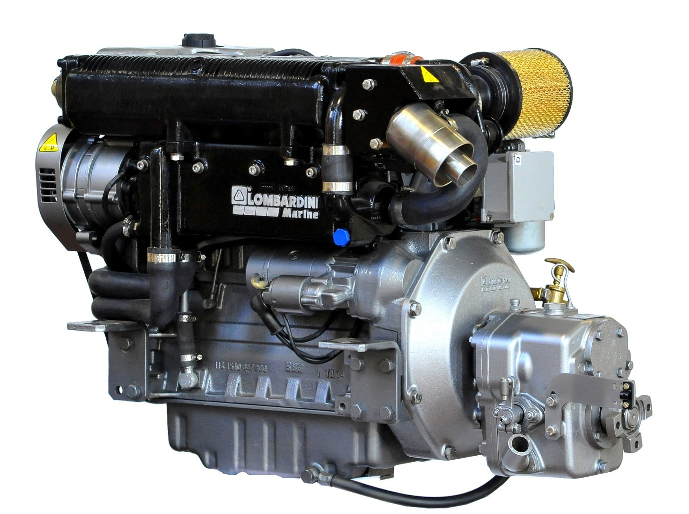
Двигатель был доставлен компанией дистрибьютером на верфь «Амета», где он и ждал пока под него будет готов фундамент. Фундамент под двигатель и валолинию делали специалисты верфи «Амета». Они же и установили двигатель на свое место в первый раз. На рисунке 6.2 приведено фото фундамента уже более поздней версии: заварены люки фальшкиля под двигателем и все тщательно выкрашено.
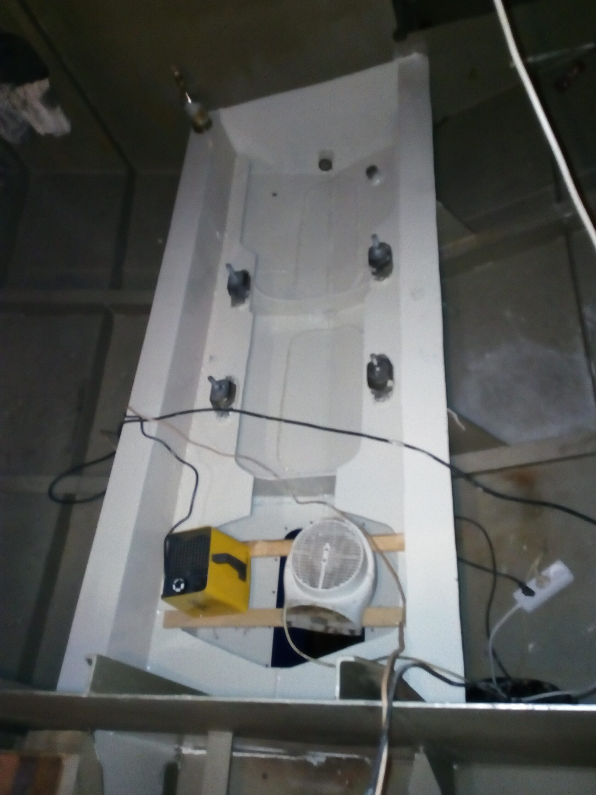
В качестве эластичных опор были применены опоры фирмы Vetus, позволяющие обойтись без упорного подшипника. Правда, если бы я делал этот узел еще раз, то упорный подшипник применил бы обязательно. Сейчас, по сути, упор винта передается на упорный подшипник в редукторе и далее через весь корпус двигателя на эластичные опоры. В итоге происходит небольшое осевое перемещение гребного вала через сальники дейдвуда, что может вести к преждевременному износу сальников.
У фирмы Vetus мною также были заказаны следующие детали (рисунок 6.3):
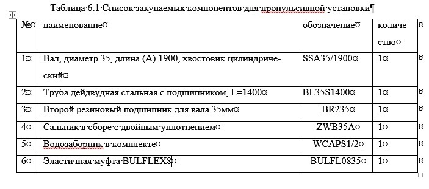
По моей специальной просьбе специалисты верфи собрали всю пропульсивную установку, кроме винта. Мне хотелось убедиться, что все детали подходят и все работает. Тут стоит похвалить верфь и чертежи Брюса – все сошлось и все заработало.
Но позднее нам самим пришлось демонтировать и устанавливать двигатель на фундамент еще раз. Мы не рискнули пескоструить корпус внутри вместе с двигателем, хотя и были рекомендации его тщательно обернуть.
Для того, чтобы не укокошить столь дорогостоящее оборудование, Максим Каверин разработал нам план демонтажа двигателя.
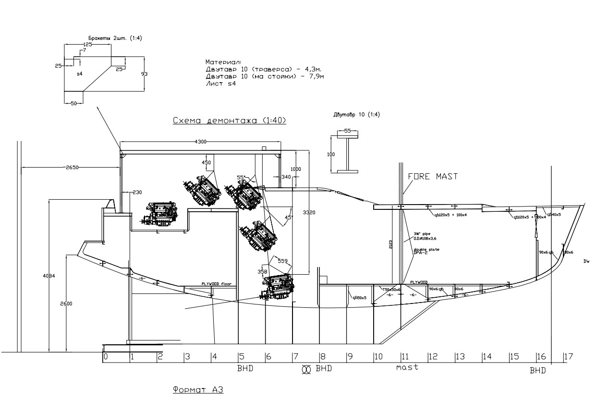
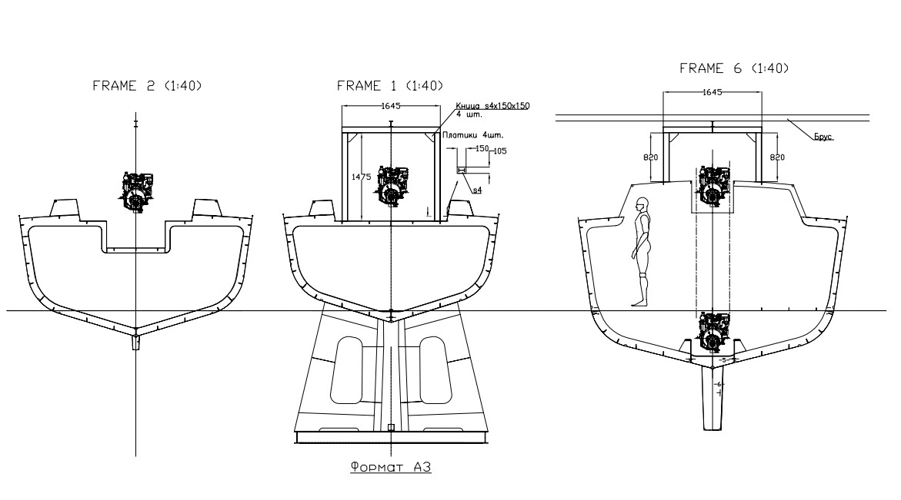
На деле конструкция получилась немного другая, но тоже не плохо.
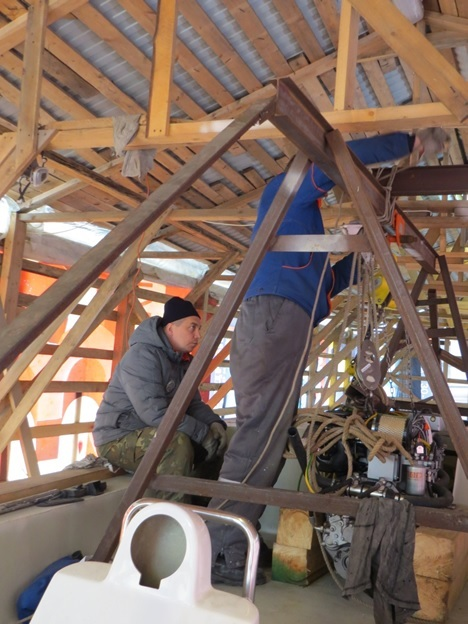
Главное, что двигатель пролез в кап.
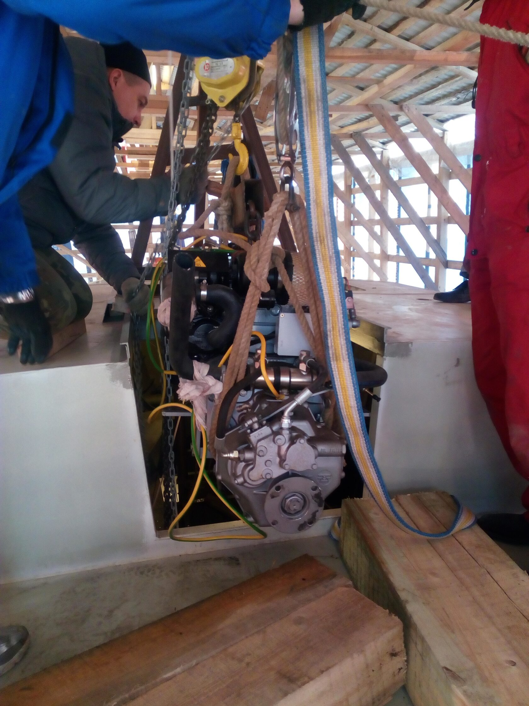
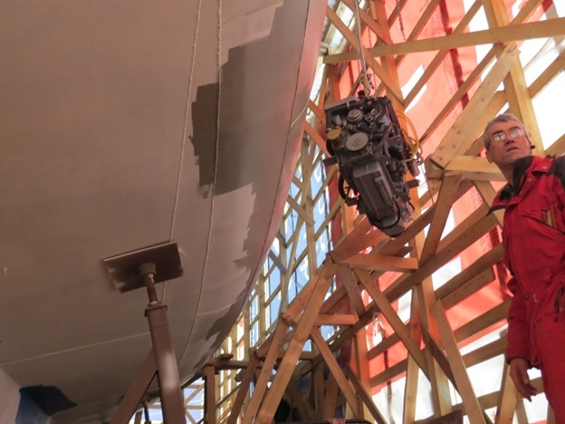
Двигатель был приобретен через несколько месяцев после начала строительства и до спуска на воду было еще очень далеко. Завод-изготовитель рекомендовал заводить двигатель раз в четыре месяца хотя бы на несколько минут. Особенно странно выглядел работающий дизель, стоящий на европоддоне в углу сарая.
После того как корпус был полностью отпескоструен и трюм тщательно выкрашен, двигатель был возвращен на свое штатное место.
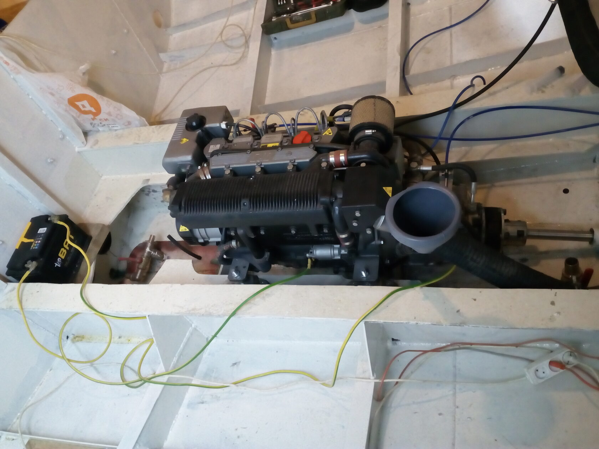
Установку по месту и обустройство всех систем делал экипаж своими силами.
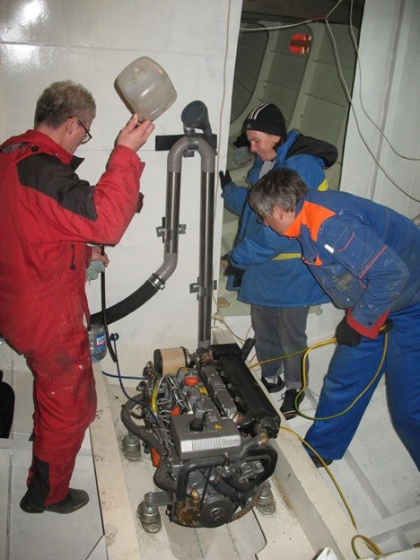
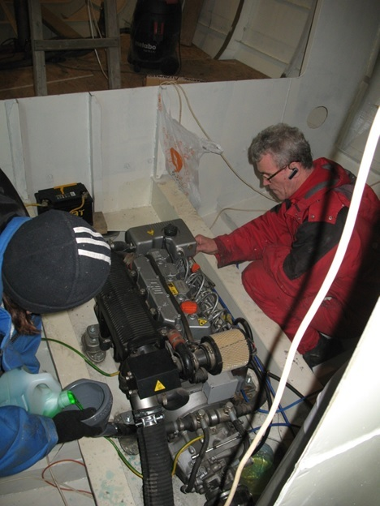
Основную топливную цистерну (или мы еще называем топливный танк) изготовили и первоначально установили специалисты верфи. Она располагается между девятым и десятым шпангоутом.
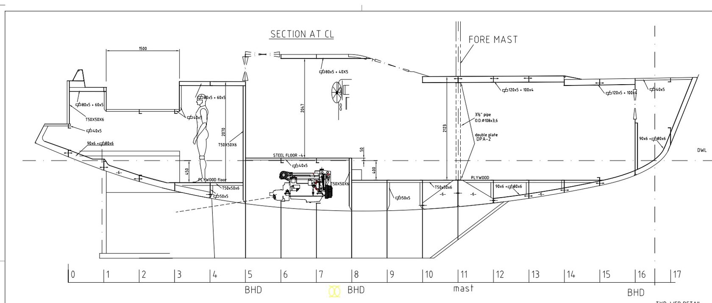
Цистерна изготовлена из черного металла толщиной 5 мм, объем 450 литров. Внутри цистерны установлены две продольные полупереборки для уменьшения площади свободной поверхности жидкости.
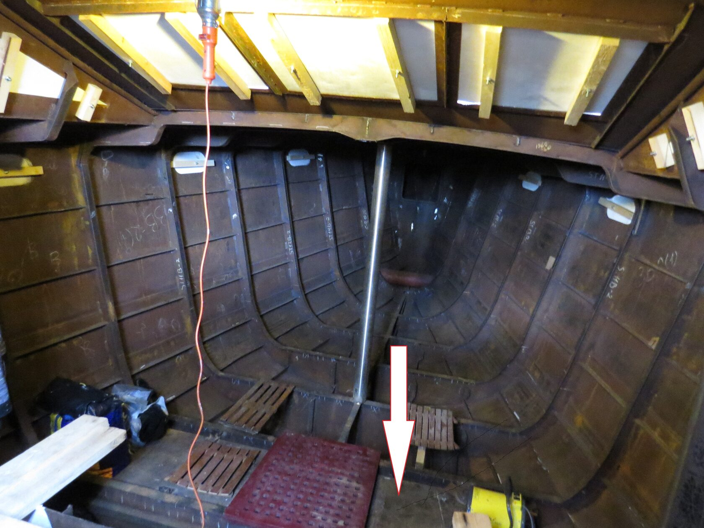
Мы опять же убедились, что все прекрасно встает куда надо и благополучно ее вытащили.
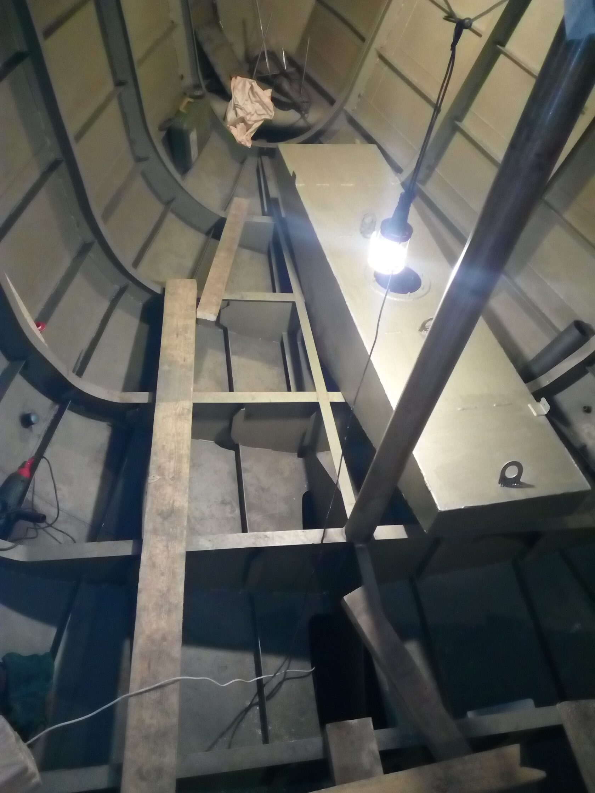
До ее окончательной установки необходимо было еще залить балласт в фальшкиль и покрасить трюм.
По конструкции цистерна имеет только заливное отверстие по правому борту и один общий люк. Система слива топлива не предусмотрена, приходится остатки топлива и конденсат вычерпывать и чистить цистерну только через этот люк.
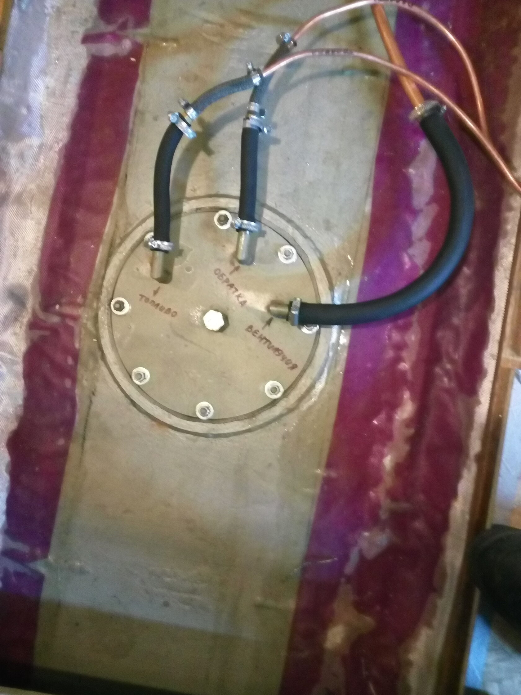
В центре этого люка расположен щуп-уровнемер. Электронные системы измерения уровня топлива в основной цистерне после непродолжительных споров мы делать не стали. Во всяком случае, отложили до лучших времен, когда будет нечем заняться.
А вот где мы поставили электронный датчик уровня топлива, так это расходная цистерна (или танк).
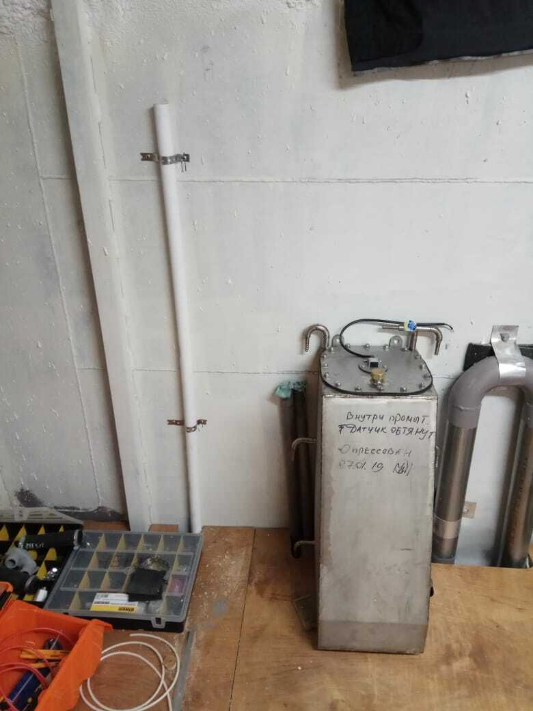
Расходный танк расположен на нижней палубе над двигателем под входным трапом. Лавры его проектирования принадлежат Сергею Куликову. Он изготовлен из нержавейки и объем его 50 литров. В расходный танк топливо подкачивается электрическим насосом из основного танка. Топливо проходит через фильтр-отстойник. Уже профильтрованное топливо из расходного танка фильтруется еще раз в другом фильтре-отстойнике и далее идет в двигатель через штатный фильтр тонкой очистки.
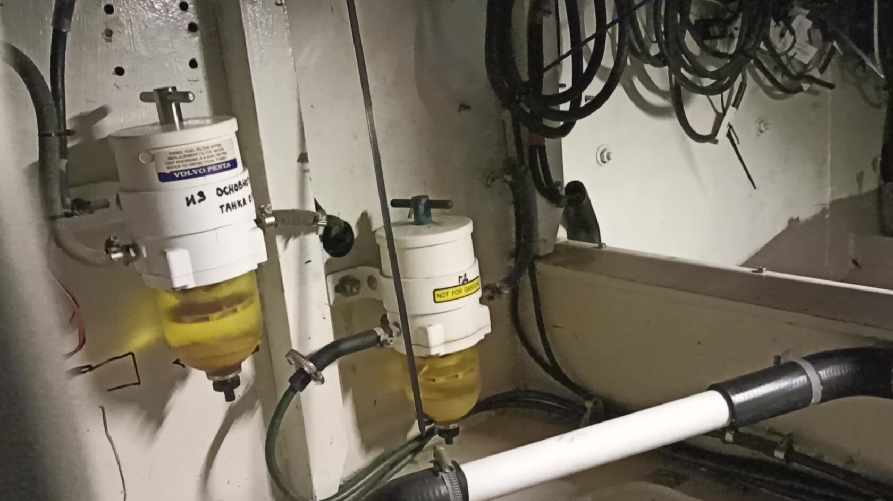
Фактически топливо фильтруется трижды. В расходном танке предусмотрен слив топлива обратно в основной танк на случай, если мы проморгаем уровень при закачке топлива. В процессе эксплуатации мы не раз порадовались этой своей предусмотрительности, так как промаргиваем часто. Информация об уровне топлива в расходном баке выведена на пьедестал к рулевому. Световой и звуковой сигнализации о критическом уровне топлива в баке нет, поэтому судоводителю надо строго следить, чтобы двигатель не остался без топлива. Из этого же бака должны питаться соляркой печка-вебаста и дизель-генератор.
Вот вроде и все про топливную систему. Про систему выхлопа расскажу в разделе «Системы». Здесь упомяну только, что у фирмы Vetus также была закуплена и установлена система сигнализации температуры выхлопных газов, которая должна подавать визуальный и звуковой сигнал, если измеряемая системным датчиком температура выхлопа превышает 71оC (160оF). Эта информация также выведена на пьедестал к рулевому и сигнализация должна срабатывать раньше, чем сигнализация по перегреву двигателя при недостатке или отсутствии воды внешнего контура охлаждения.
Дистанционное управление двигателем тоже проводили силами экипажа. Очень долго думали и жарко спорили о том, куда поместить панель упраления. В конце концов придумали разместить панель управления двигателем на передней стенке кокпита.
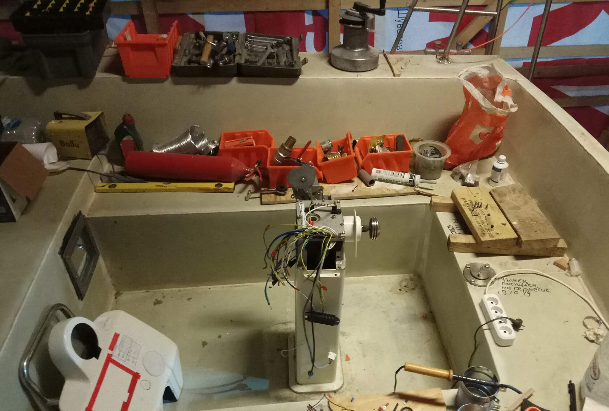
Вырезали отверстие, закрыли оргстеклом и за ним укрепили панель.
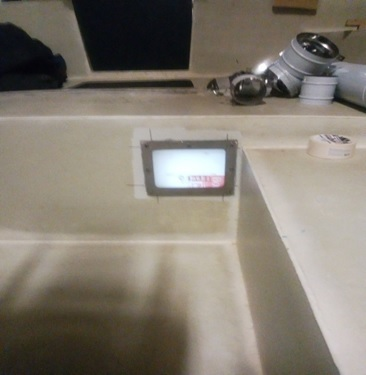
Таким образом, панель управления двигателем полностью защищена от физического воздействия и осадков, но видна рулевому.
Внутри корпуса яхты панель расположена в специальной нише и со всеми контактами и проводами также защищена от физического воздействия и атмосферных осадков, спрятана в обшивке каюты, но имеет довольно быстрый доступ.
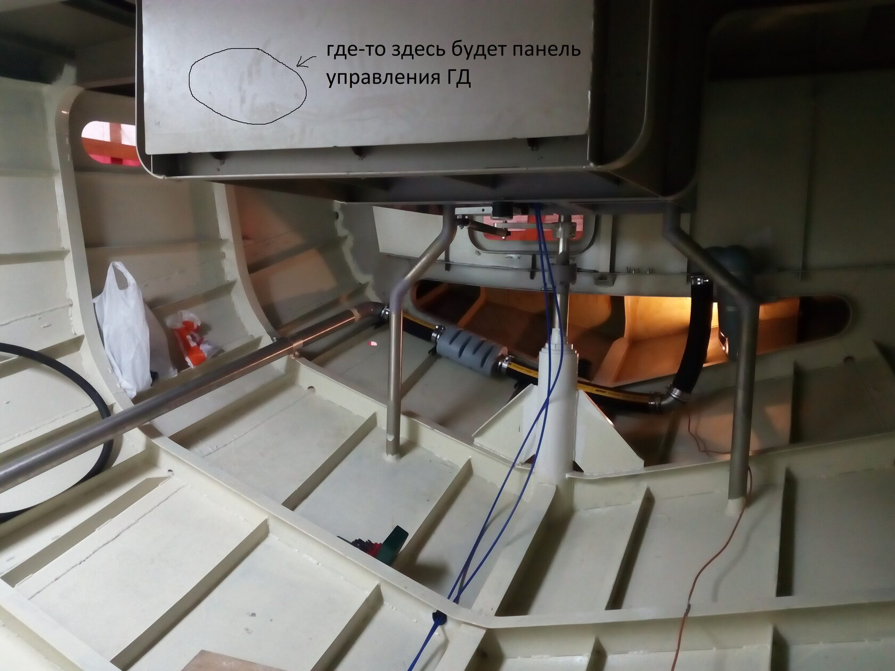
Естественно, питание самой панели и кнопку пуска двигателя продублировали на пьедестале. Там же установлены датчики контроля по системам двигателя и контроля нагрева выхлопных газов.
К сожалению, в процессе эксплуатации двигателя обнаружено, что пара сальников двигателя подкапывает маслом, правда, пока не сильно. На Катти такого не было. Наверное, лучше было брать Volvo Penta.
Винт
Для тех, кто купил у фирмы VETUS гребной вал, они предлагали подобрать гребной винт бесплатно. Мы, конечно же, этим предложением воспользовались. Для этого необходимо было заполнить присланные ими бланки с информацией о типе судна, водоизмещении, форме обводов и материале корпуса, основные размерения яхты и размеры, ограничивающие положение винта по отношению к корпусу и перу руля. По двигателю их интересовало: марка двигателя, количество цилиндров, максимальная мощность, максимальные обороты, тип редуктора и передаточное отношение. По валу интересовали диаметр, длина и форма хвостовика. Но про свой вал они и так все знали, достаточно было указать его марку.
По винту от нас требовалось определиться с количеством винтов, направлением вращения винта (у нас правое) и типом винта. Тип винта – это, как говорится, любой каприз за ваши деньги –складной, нескладной, с регулируемым шагом и прочими достижениями науки и техники. Ну, поскольку бюджет не так чтобы позволял мне особенно капризничать, я выбрал самый простой вариант. От нас также требовалось определиться с желаемой скоростью хода. Мы пожелали 8 узлов. Они определили для нас 3-х лопастной винт из марганцевой бронзы, диаметр 21 дюйм, шаг 14 дюймов, дисковое отношение 0,52, правосторонний, марка P3B21X14R, для валов диаметром 35 мм с конусностью 1:10.
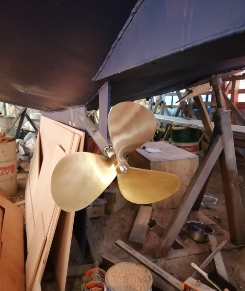
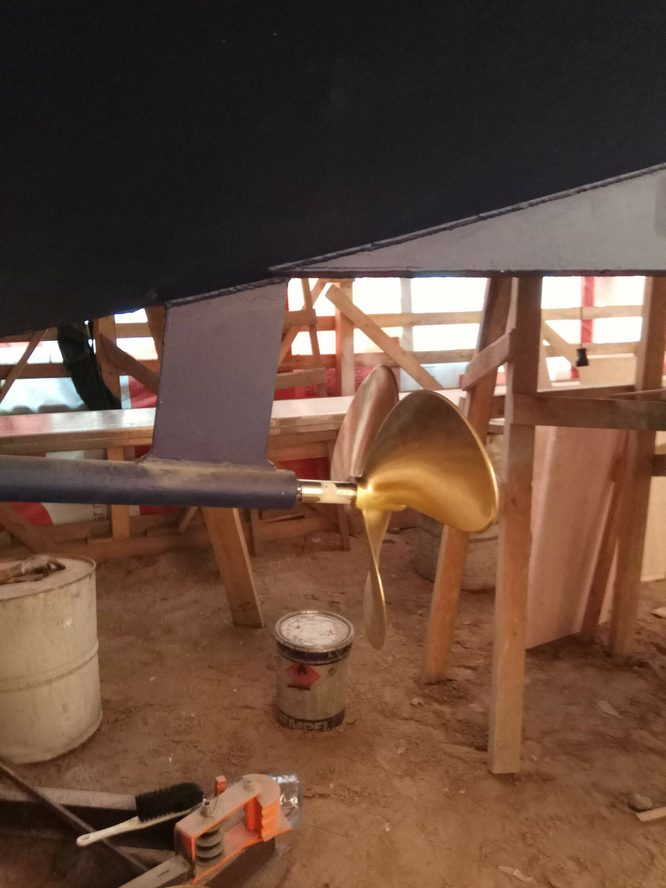
Оказалось, что на складе именно этого винта не было в наличии, и нам пришлось ждать его изготовления несколько месяцев. Мы также озаботились и о защите от коррозии, которая потребовала замены через два года эксплуатации.
Опыт эксплуатации яхты пока претензий к винту не выявил.